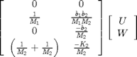
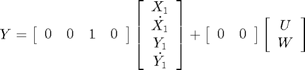
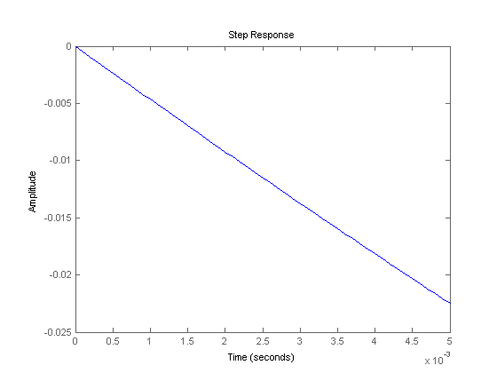
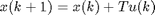
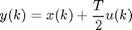
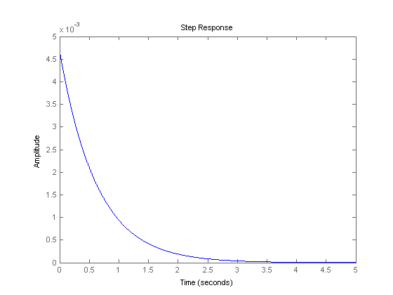
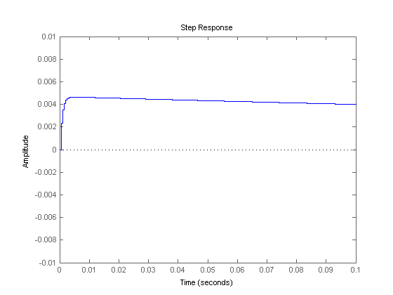

Suspension: Digital Controller Design
Key MATLAB commands used in this tutorial are: ss , step , c2d , ssdata , tfdata , roots , place
Contents
In this example, we will design a digital state-space controller for the bus suspension control example. First we will convert the continuous-time model to a discrete-time model, and then use the pole placement method to design the controller. From the Suspension: System Modeling page. the state space model of the system is where Y1 = X1-X2.
(1)![$$
\left[ \begin{array}{c} \dot{X_1} \\ \ddot{X_1} \\ \dot{Y_1} \\ \ddot{Y_1} \end{array} \right] =
\left[ \begin{array}{cccc}
0 & 1 & 0 & 0 \\
\frac{-b_1 b_2}{M_1 M_2} & 0 & \left[ \frac{b_1}{M_1} \left( \frac{b_1}{M_1}+\frac{b_1}{M_2}+\frac{b_2}{M_2} \right)-\frac{K_1}{M_1} \right] & \frac{-b_1}{M_1} \\
\frac{b_2}{M_2} & 0 & -\left( \frac{b_1}{M_1}+\frac{b_1}{M_2}+\frac{b_2}{M_2} \right) & 1 \\
\frac{K_2}{M_2} & 0 & -\left( \frac{K_1}{M_1}+\frac{K_1}{M_2}+\frac{K_2}{M_2} \right) & 0
\end{array} \right]
\left[ \begin{array}{c} X_1 \\ \dot{X_1} \\ Y_1 \\ \dot{Y_1} \end{array} \right] +
$$](Content/Suspension/Control/Digital/html/Suspension_ControlDigital_eq41358.png)
(2)
(3)
Where:
(m1) 1/4 bus body mass 2500 kg
(m2) suspension mass 320 kg
(k1) spring constant of suspension system 80,000 N/m
(k2) spring constant of wheel and tire 500,000 N/m
(b1) damping constant of suspension system 350 N.s/m
(b2) damping constant of wheel and tire 15,020 N.s/m
(U) control force
The design requirements are:
- Overshoot: Output (X1-X2) less than 5% of disturbance (W)
- Settling time: Less than 5 seconds
Sampling time selection
The first step in the design of a discrete-time controller is to convert the continuous plant to its discrete time equivalent. First, we need to pick an appropriate sampling time, T. In this example, selection of sampling time is very important since a step in the road surface very quickly affects the output. Physically, what happens is the road surface suddenly lifts the wheel, compressing the spring, K2, and the damper, b2. Since the suspension mass is relatively low, and the spring fairly stiff, the suspension mass rises quickly, increasing X2 almost immediately. Since the controller can only see the effect of the disturbance after a complete sampling period, we have to pick a sampling time, T, short enough so that the output (X1-X2) does not exceed the 5% requirement in one sampling period. To pick the sampling period, we need to closely examine the beginning of the step response. If you remember from the Suspension: System Analysis page, the output quickly goes negative in response to a step disturbance, and then begins to oscillate. We will simulate just the beginning of this response by setting the time vector input to the step function to range from 0 to .005. The response to a .1m step input is simulated by multiplying the B matrix by .1. Create a new m-file and enter the following code:
m1 = 2500;
m2 = 320;
k1 = 80000;
k2 = 500000;
b1 = 350;
b2 = 15020;
A = [0 1 0 0
-(b1*b2)/(m1*m2) 0 ((b1/m1)*((b1/m1)+(b1/m2)+(b2/m2)))-(k1/m1) -(b1/m1)
b2/m2 0 -((b1/m1)+(b1/m2)+(b2/m2)) 1
k2/m2 0 -((k1/m1)+(k1/m2)+(k2/m2)) 0];
B = [0 0
1/m1 (b1*b2)/(m1*m2)
0 -(b2/m2)
(1/m1)+(1/m2) -(k2/m2)];
C = [0 0 1 0];
D = [0 0];
sys = ss(A,B,C,D);
step(sys*[0;1]*.1,0:0.0001:.005);
 This plot shows that the spring, K1 compresses very quickly, and exceeds our requirement of 5mm in response to a 0.1-m step after only a little more than 0.001s. Therefore, we will set T=.0005s in order to give the controller a chance to respond.
Continuous to discrete conversion
Now that we have selected a sampling time, we can convert the plant to discrete time. MATLAB can be used to convert the above state space model, sus, to a discrete state space model, d_sys, by using the c2d command. The c2d command takes three arguments: the continuous time system, the sampling time, T, and the type of hold circuit. In this example we will use zero-order hold ('zoh'). Refer to the Introduction: Digital Controller Design tutorial.
Add the following code to your m-file. Running in the command window, MATLAB should return the following, which represents the new discrete-time state-space model.
T = .0005;
d_sys = c2d(sys,T,'zoh')
d_sys =
a =
x1 x2 x3 x4
x1 1 0.0005 -3.126e-06 -1.802e-08
x2 -0.003461 1 -0.01244 -7.313e-05
x3 0.02338 5.852e-06 0.976 0.000494
x4 0.7705 0.0001935 -0.9112 0.9998
b =
u1 u2
x1 4.999e-11 8.506e-07
x2 1.999e-07 0.003461
x3 4.375e-10 -0.02338
x4 1.762e-06 -0.7705
c =
x1 x2 x3 x4
y1 0 0 1 0
d =
u1 u2
y1 0 0
Sample time: 0.0005 seconds
Discrete-time state-space model.
Adding integral control
In this example, we will need to add an integrator to the system in order to drive the steady-state response to zero. We will add this integrator in series with the plant. This will have the effect of adding another state to the plant. An integrator in discrete-time state space can be represented as a trapezoidal approximation of integration over each sample period as follows:
(4)
(5)
To add this, add the following commands in your m-file:
Ai = 1;
Bi = T;
Ci = 1;
Di = T/2;
[As,Bs,Cs,Ds]=ssdata(d_sys);
Aa = [As, zeros(4,1);
Bi*Cs, Ai];
Ba = [Bs;
0,0];
Ca = [Cs, 0];
Da = Ds;
d_sys_int = ss(Aa,Ba,Ca,Da,T);
[Ad,Bd,Cd,Dd] = ssdata(d_sys_int);
Designing the controller
The structure of the controller is similar to the structure of the continuous-time state-space controller. We will now use the place command to compute the gain matrix, K, which will, in feedback, give us the desired closed-loop poles.
We first need to decide where to place the closed-loop poles. Since we get to place all five of the closed-loop poles, we can be very selective about where they go. In particular, we can place them to cancel all of the plant zeros, as well as give us the desired response. First, we will find the plant zeros by converting the plant's digital state equations to a transfer function, and then finding the roots of the numerator. We will use the tfdata command which takes a system (d_sys) as its argument and outputs a transfer function numerator and denominator. Since the suspension system (d_sys) has two inputs, only one input must be selected. Notice how the first input is selected in the following code.
Add the following code to your m-file:
sys1 = d_sys_int*[1;0]; %select the first input [num,den] = tfdata(sys1,'v'); z = roots(num)
z = -0.9929 0.9986 + 0.0065i 0.9986 - 0.0065i
We will select these three zeros as three of our desired closed-loop poles. One of the other two will be selected at .9992 since a pole there settles in approximately 10000 samples (or 5 seconds). The last pole will be selected at z=.5 since this is sufficiently fast to be insignificant. Add the following code to your m-file:
p1 = z(1); p2 = z(2); p3 = z(3); p4 = .9992; p5 = .5; K=place(Ad,Bd*[1;0],[p1 p2 p3 p4 p5])
K =
1.0e+09 *
0.0534 0.0000 1.0898 0.0011 1.8286
Simulating the closed-loop response
We can use the step command to simulate the closed-loop response. Since multiplying the state vector by K in our controller only returns a single signal, U, we need to add a row of zeros to K by multiplying it by [1 0]T. This is identical to what was done in the continuous design to compensate for the fact that there are two inputs to the plant, but only one is a control input. We will simulate with a negative 0.1-m step disturbance in the road to give us a positive deflection of the bus for aesthetic reasons. Enter the following code into your m-file:
d_sys_cl = ss(Ad-Bd*[1;0]*K,Bd,Cd,Dd,T); step(-.1*d_sys_cl*[0;1],5);
We can see in this plot, that the overshoot is less than 5mm, and the response settles well within 5 seconds. Changing the axes allows a better view of the suspension's initial response.
d_sys_cl = ss(Ad-Bd*[1;0]*K,Bd,Cd,Dd,T); step(-.1*d_sys_cl*[0;1],5); axis([0 0.1 -.01 .01])